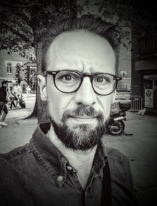

I'm a Senior Lecturer in Logic and Head of the Department of philosophy, linguistics and theory of science of the University of Gothenburg.
I did my PhD in Mathematics at the University of Birmingham and Chalmers University of Technology in 2004 with a thesis on mathematical logic and models of Peano's arithmetic, under supervision of Richard W. Kaye. After which I worked as a Senior Lecturer at the Mid Sweden University in Sundsvall before moving to the University of Gothenburg in 2006.
Papers
- Invariance and Definability, with and without equality (with D. Bonnay) Notre Dame Journal of Formal Logic, Volume 59, Number 1 (2018), 109-133. doi:10.1215/00294527-2017-0020 [pdf]
- Dependence logic with generalized quantifiers: Axiomatizations (with J. Kontinen and J. Väänänen) Journal of computer and system sciences, Volume 88, Pages 90-102, 2017. doi:10.1016/j.jcss.2017.03.010.
- Implicitly definable generalized quantifiers In Idées Fixes. A Festschrift Dedicated to Chistian Bennet on the Occasion of His 60th Birtday [pdf]
- Generating Comprehensible Explanations in Description (with A. R. Nizamani and C. Strannegård) 27th International Workshop on Description Logics. Vienna, Austria, July 17-20, 2014, Vol-1193 s. 530-542. [pdf]
- Symbolic Reasoning with Bounded Cognitive Resources (with A. R. Nizamani and C. Strannegård and O. Häggström) 36th Annual Conference of the Cognitive Science Society [pdf]
- Dependence logic with Generalized quantifiers: Axiomatizations (with J. Kontinen and J. Väänänen) In proceedings of WoLLIC 2013. doi:10.1007/978-3-642-39992-3_14 [pdf] [Proceedings version]
- Bounded Kolmogorov Complexity Based on Cognitive Models (with C. Strannegård, A. R. Nizamani, A. Sjöberg) In proceedings of AGI, 2013. doi:10.1007/978-3-642-39521-5_14i [pdf]
- Reasoning about truth in first-order logic (with C. Strannegård, A. R. Nizamani, and L. Rips) Journal of Logic, Language and Information, Volume 22, Issue 1, pp 115-137, 2013. doi:10.1007/s10849-012-9168-y [pdf]
- Characterizing quantifier extensions of dependence logic (with J. Kontinen) Journal of Symbolic Logic vol 78, no 1, pp. 307-316, 2013. doi:10.2178/jsl.7801210 [pdf]
- Generalized quantifiers in dependence logic. Journal of Logic, Language and Information vol 21, pp. 299-324, 2012. doi:10.1007/s10849-012-9162-4 [pdf]
- Transplendent models: Expansions omitting a type (with Richard W. Kaye) Notre Dame Journal of Formal logic, vol. 53, no 3, pp. 423-438, 2012. doi:10.1215/00294527-1716739 [pdf]
- Non-isomorphism invariant Borel quantifiers (with Philipp Schlicht) Proc. of the AMS vol 139, no 12. doi:10.1090/S0002-9939-2011-10849-9 [pdf]
- A note on standard systems and ultrafilters. Journal of Symbolic Logic, vol 73, no 3, pages 824-830 doi:10.2178/jsl/1230396749 [pdf]
- Doctoral thesis: Expansions, omitting types, and standard systems [pdf]
- Licentiate thesis: Satisfaction classes in nonstandard models of first-order arithmetic [pdf]
Presentations
- Generalized qantifiers and team semantics (Workshop on Logic and Algorithms in Computational Linguistics 2017, Stockholm, 2017-08-16) [pdf]
- Team semantics for logics with generalized qantifiers (Logic seminar, Göteborg, 2017-04-21) [pdf]
- A maximal semantics for Dependence logic (Logic Colloquium 2015, Helsinki, 2015-08-04) [pdf]
- Dependence Logic and Generalized Quantifiers (Logics for Dependence and Independence, Dagstuhl, 2015-06-26) [pdf]
- Implicitly definable generalized quantifiers (Filosofidagarna 2015, Linköping, 2015-06-13) [pdf]
- Implicit definability as a criterion for logicality (Logic seminar, Göteborg, 2014-03-14) [pdf]
- Description logics and explanations (Human reasoning seminar in Gothenburg, 2013-11-08) [html]
- Dependence and Axiomatizations (Logic seminar in Gothenburg, 2013-09-27) [pdf]
- Dependence logic with Generalized quantifiers: Axiomatizations (WoLLIC, Darmstadt, 2013-08-21) [pdf]
- On logic and dependence (Swedish Congress of Philosophy, Stockholm, 2013-06-16) [pdf]
- On logicality, invariance, and definability (Intensionality in Mathematics, Lund, 2013-05-12) [pdf]
- Models of arithmetic, standardness and expansions (Helsinki logic seminar, 2013-03-06) [pdf]
- On Logicality (Gothenburg-Oslo Workshop on Philosophical Logic, Oslo, 2012-12-01) [pdf]
- On logicality, invariance and definability (Logic seminar in Gothenburg, 2012-11-16)
- What is logic? On logicality, invariance and definability (Uppsala Logic Seminar, 2012-11-15)
- Invariance and definability, with or without equality (Scandinavian Logic Symposium 2012, Roskilde, 2012-08-20) [pdf]
- Dependence logic with generalized quantifiers (Logic Colloquium 2012, Manchester) [pdf]
- Branching quantifiers, compositionally (Logic seminar Helsinki, 2012-01-11) [pdf]
- Logical constants as uniquely definable quantifiers (Logic seminar Göteborg, 2011-09-30) [pdf]
- Dependence in logic (ESSLLI, Ljubljana, 2011-08-07) [pdf]
- Dependence in Logic (Filosofidagarna, Göteborg, 2011-06-12) [pdf]
- Multivalued dependencies and generalized quantifiers (LINT Workshop, Oxford, 2011-04-03) [pdf]
- Generalized quantifiers in dependence logic (Logikseminariet, Göteborg, 2011-02-04) [pdf]
- Non permutation invariant Borel quantifiers ( Workshop on Logic, Language and Computation & The 9th International Conference on Logic and Cognition, Guangzhou, China, 2010-12-05) [pdf]
- Classification problems and models of arithmetic (Logikseminariet, Göteborg, 2010-10-08) [pdf]
- Borel Quantifiers (Logikseminariet, Göteborg, 2010-05-01) [pdf]
- Dependence and logicality (Logic and Language Technology seminar, Göteborg, 2010-04-16) [pdf]
- Logical constants: Invariance and definability (Institut Mittag-Leffler, Djursholm, 2009-10-22) [pdf]
- Generalized quantifiers in dependence logic (Logikseminariet, Göteborg, 2009-03-27) [pdf]
- Is dependence logical? (Amsterdam, 2008-12-06) [pdf]
- Spel och tal (Mittuniversitetet, Sundsvall, 2007-11-01) [pdf]
- Transplendent models: Omitting types in expansions (Models and interpretations, Utrecht, 2007-04-04) [pdf]
- Världens största tal (Filosofiska föreningen, Göteborg, 2007-03-21) [pdf]
- Ickestandardanalys - ett didaktiskt knep? (Matematikbiennalen 2006, Malmö, 2006-01-27) [pdf]
- Expansions omitting a type (New York City Logic Conference, New York, 2005-05-21) [pdf]
- Variations on replendency and recursive saturation (New York Graduate Student Logic Conference, New York, 2004-10-20) [pdf]
- Notions of resplendency for logics stronger than first-order logic (Logic Colloquium 2004, Torino, 2004-07-27) [pdf]
- A notion of recursive saturation for models of arithmetic with the standard predicate (M.ARI.AN. 2004, Pisa, 2004-06-25) [pdf]
- Omitting types in expansions and related strong saturation properties (Logic Colloquium 2003, Helsinki, 2003-08-15) [pdf]
- Satisfaction classes in nonstandard models of first-order arithmetic (Licentiate Seminar in Chalmers, Göteborg, 2002-09-24) [pdf]
- Resplendency and omitting types (British Logic Colloquium 2002 in Birmingham, 2002-09-13) [pdf]
- Satisfaction classes or How to define truth in a non-standard world (Logic seminar at the philosophy department, 2001-11-06) [pdf]
Other stuff
- A small english-swedish mathematical dictionary (originally by Anders Vretblad, Uppsala) [pdf]
Links
Contact details
- My office is at Renströmsgatan 6.
- Call me at +46-31-786 6335
-
Department of Philosophy, Linguistics and Theory of Science University of Gothenburg Box 200 405 30 Göteborg Sweden - Send email to fredrik.engstrom@gu.se.